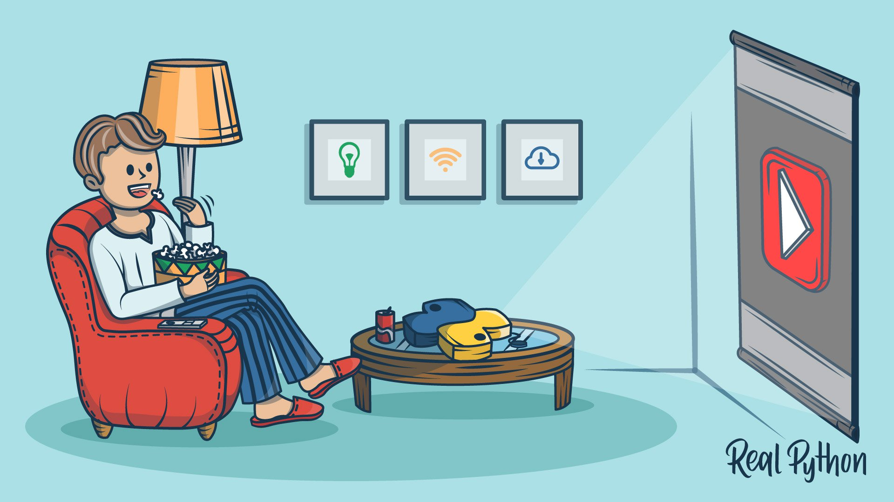

Крупнейшая подборка Python-каналов на Youtube
Почитали форумы и решили собрать список классных Python-каналов для изучения языка. Если вам нравится учиться по видео, открывайте статью.
Обсудить

Python-каналов много, но здесь собраны только те, которые удовлетворяют следующим условиям:
Много обучающих видео о Python и Scratch.
Anaconda − самая популярная data science-платформа в Python. Anaconda Inc. возглавляет крупные open-source проекты, составляющие основу современного анализа данных: Anaconda, NumPy, SciPy. Флагман Anaconda, Anaconda Enterprise, позволяет организациям защищать, регулировать, масштабировать и расширять Anaconda, чтобы подстроить продукт под свои нужды и двигать бизнес вперед.
Кроме обучающих видео, канал содержит видеозаписи конференций AnacondaCon с выступлениями представителей комьюнити по анализу данных, IT-профессионалов, аналитиков, разработчиков и бизнес-лидеров.
Канал учителя, преподающего Python в средних и старших классах школы. Автор убежден, что любой может научиться программировать, а Python − отличный инструмент для того, чтобы начать. Много видео для начинающих.
Увлекательные обучающие видео, а еще хитрости и трюки, которые выведут ваше программирование на новый уровень.
Программирование для предпринимателей, видеоуроки по программированию для специалистов без технического образования. Научит работать с Django, Python, API, платежами Stripe, jQuery, Twitter Bootstrap и многим другим.
Этот канал ориентирован на туториалы и пошаговые инструкции для разработчиков программного обеспечения. Освещаются темы разного уровня сложности. Неважно, новичок вы или уже имеете опыт.
Обучение программированию, веб-дизайну, отзывчивому веб-дизайну, ReactJS, Django, Python, разработке игр и многому другому.
Видеоуроки по программированию и компьютерным наукам.
Если вы заинтересованы в развитии карьеры в сфере data science, канал поможет приблизиться к этой цели. Здесь есть углубленные туториалы, которые помогут вам справиться с важными научными темами и научиться использовать Python и R.
Видеоархив конференции и тренингов Дэвида Бэйсли.
Уже более 15 лет Enthought разрабатывает решения в области искусственного интеллекта. По словам представителей компании Enthought ускоряет цифровую революцию, позволяя компаниям и их сотрудникам использовать преимущества искусственного интеллекта и машинного обучения для решения своих задач.
Кроме того, Enthought известен поддержкой SciPy. Помимо контента, разработанного самой компанией, этот канал хранит видеозаписи SciPy US и EuroScipy.
Здесь можно найти видео, демо и лекции о программировании веб-разработке, особенностях Python.
На этом канале можно найти видео о веб-разработке на Python: от разработки и деплоя веб-сервиса Django до туториалов по Flask.
К сожалению, единого канала YouTube, который содержал бы записи со всех проведенных конференций PyCon, нет. Вместо этого, записи размещаются на отдельных каналах с указанием года записи. А еще их можно посмотреть на PyVideo.org.
PyData представляет собой форум для международного сообщества пользователей и разработчиков инструментов анализа данных. Это классный ресурс для того, чтобы делиться идеями и учиться друг у друга. Помимо прочего, здесь обсуждают новые подходы и технологии для управления, обработки, аналитики и визуализации данных. Сообщества PyData занимаются наукой о данных с использованием многих языков, включая Python и R.
Туториалы по Python, руководства для питонистов, выходящие за рамки основ. На этом канале новые видеоролики Python выходят каждую неделю. Они довольно короткие, так что можно вписать изучение Python даже в самый забитый график.
Здесь можно найти видео о машинном обучении, финансах, анализе данных, робототехнике, веб-разработке, разработке игр и многом другом.
Автор канала − увлеченный разработчик в сфере искусственного интеллекта. В видеороликах рассказывается об использовании искусственного интеллекта в играх, музыке, чат-ботах и многое другое.
Socratica делает высококачественные образовательные видео по математике и естественным наукам. Новые видеоролики выходят каждую неделю. Авторы являются выпускниками Калифорнийского технологического института.
Много обучающих видеороликов самой разной тематики: Python, фреймворки JavaScript, Git, сетевая безопасность и многое-многое другое.
Записи с локальных Python-конференций
Следующие каналы содержат туториалы, выступления, записи небольших локальных конференций Python, проводимых по всему миру.
Эти каналы не включены в основной список, так как на многих меньше 2 000 подписчиков, а некоторые ведут на языках, отличных от английского.
Понравилась подборка Python-каналов на Youtube? Посмотрите следующие материалы
Источник: Крупнейшая подборка Python-каналов на Youtube от Real Python.